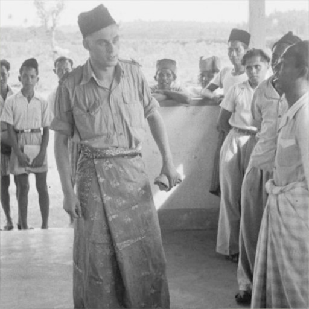

In this chapter, Ondaatje conveys to the reader how the
storytelling of the book will be expressed. With his writing style
and way of storytelling being influenced from his family's
discussions and way of recalling family memories that is not
necessarily in chronological order.
"No story is ever told just once. Whether a memory of funny
hideous scandal, we will return to it an hour later and retell
the story with additions and this time a few judgements thrown
in." (p. 8).
The writing and discussion throughout the chapter expresses his
writing style throughout the rest of the story. Telling the
stories and faint memories in sections, which are not in
chronological order, only connecting and making sense of the chaos
by self-referencing the different memories throughout. The
conversation explains the reasoning behind the writing style,
deepening the reader understanding of why Ondaatje chose this
specific style for his family memoir, being that his family often
recalls memories in the same manner.
However, these examples in Jaffna Afternoons only explore the
self-referencing aspect of Ondaatje's writing in the memoir. The
other aspect of the references being in non-chronological order is
explored earlier, in the first chapter. A very early example we
see of this is when Michael is asked during his farewell party,
"'So how did your grandmother die?' 'Natural causes.' 'What?'
'Floods.'" (p. 5).
The reference is about Lalla, who dies during a particularly
strong monsoon which causes a flood as the reader learns in a
later section.
"Below the main street of Nuwara Eliya teh land drops suddenly
and Lala fell into deeper waters ... there was the great blue
ahead of her ... she hit it and was dead." (p. 111).
The effect created is a sense of curiosity for the reader when
first being presented with small details of memories. Then when
finally being told a larger portion of the story, the reader is
able to recollect and reflect on the story as a whole after
linking many of the memories told as a singular entity. The
storytelling style creating a reading experience that requires
more focus to recall previous events that were intentionally just
briefly mentioned, which develops reader understanding of the
events that occur as later sections of the memoir are revealed.
This use of disconnected storytelling of individual stories and
self-references to connect the memoir can also have flaws. One of
which, being difficult to follow and requiring very focused
reading and analysis in order to even understand the events of the
memoir at a basic level. This style of writing often leads to
confusing references throughout the novel. Some of these
references seemingly leading to nowhere, creating many red
herrings. One particularly example of this in Jaffna Afternoons
being,
"I do catch one piece of dialogue. A Mr. Hobday has asked my
father if he has any Dutch antiques in the house. And he
replies, 'Well ... there is my mother.'" (p. 9).
A certain Mr. Hobday talking to Michael's father is the one and
only piece of dialogue he manages to catch. The character can be
assumed to be important, talking to Michael's father, who is one
of the central focuses of the memoir. The particular storytelling
style could be used to reference this moment later in the memoir,
however, the memoir seems to never mentions Hobday again after
this chapter. This creates a creates some confusion, as other
references, just as brief as this one, are very important to the
story.
Jaffna Afternoons encapsulates Ondaatje's writing style, with main
aspects being self-references to connect together a memoir told as
individual stories, which are often not in chronological order.
The chapter uses many references within itself, to deliberately
show the the storytelling method in a short chapter, making it
clear how the story will be presented. This storytelling and
writing style, creating an effect of curiosity and makes the
reader have to focus on every small detail and brief mention of
stories. However, the writing style also creates some red herrings
throughout the story, that lead stories that may be made up, or
not important enough to be explored in the story. The chapter
itself, serves as a preface to the story, telling the reader how
the memoir is structured not by time, but instead by connections
of references, and tells the reader how they should read the
memoir.

Sarong, a garment which is sometimes worn by men in Sri
Lanka
The Royal-Thomian, a cricket series in Sri Lanka
Pappadans, a food often served with meals in Sri Lanka
Pettah, a neighbourhood in Colombo, Sri Lanka
Betel, a plant which people chew, very popular in Sri Lanka
"Wait a minute, wait a minute! When did all this happen, I'm trying
to get it straight ... Wait a minute, wait a minute, when is this
happening?" (pp. 87-89).
"Anyway ... there seems to be three different stories that you're
telling.
No, one, everybody says laughing.
One when your mother was nine. Then when she was sixty-five and
drinking at the wedding lunch, and obviously there is a period of
unrequited love suffered by the silent Trevor who never stated his
love ... when she was sixty-five." (p. 90).
"How I have used them... They knit the story together, each memory a
wild thread in the sarong." (p. 92).
"The frailty does not stop her stories though she pauses now and
then to say, 'God if you quote me I'm dead. I'll be caught for libel
and killed.'" (p. 93).
"It has moved tangible palpable, into her brain, the way memory
invades the present in those who are old, the way gardens invade
houses here." (p. 94).
"Below the main street of Nuwara Eliya teh land drops suddenly and
Lala fell into deeper waters ... there was the great blue ahead of
her ... she hit it and was dead." (p. 111).
"Hell of a lot of trouble that one caused. You know he jumped out of
the train when it was going full speed … luckily we were passing a
paddy field and he fell into it. When the train stopped he just
climbed aboard again covered with mud." (p. 138).
Final Days Father Tongue: Warm and Cold
### Jennifer Jennifer, Mervyn's daughter from his second marriage:
"He brought me up like a princess and would defend me against
everyone, even my strictest teachers. There was a Miss Kaula - a
battleaxe." (p. 176). The passage uses the term battleaxe to
describe one of Jennifer's teachers, whom was strict and Mervyn
had to protect his daughter against. Often referring to a violent
weapon, battleaxe is used as symbolism, in this context just means
to be negative and overly harsh. Emphasizes how Mervyn was a good
person in many aspects, one of which being a good father that
treated his children kindly and was protective over them. The
passage, along with others in the chapter, provides the readers
more character depth and understanding of Mervyn, he is seen as
not just an alcoholic that makes irrational decisions due to his
addiction, but as a father that cares about his children. ### V.C.
De Silva V.C. De Silva, one of Mervyn's closest friends: "I
learned a great deal from him. There was nothing about poultry he
didn't know. Or dogs. He used to have a lot of faith in me so I
loved him too." The passage here includes many memories of Mervyn,
and V.C. talks about him with a positive and warm tone. He recalls
very positive memories as well, recalling how Mervyn has helped
him in his life. Most significantly, the warm tone in the passage
emphasizes to the reader how Mervyn has positively affected many
of the people around him. ### Archer Jayawardene Archer
Jayawardene, one of Mervyn's closest friends: "A year before he
died he went into that terrible depression. V.C de Silva and I
would go there and he wouldn't speak to us. We were his closest
friends and he ignored us." (p. 179). In this passage, Archer
speaks on how during Mervyn's depression, he would often ignore
his closest friends. Interestingly, many remarks from this passage
seem cold, almost distant from Mervyn. The passage contrasts with
previous ones, where memories of Mervyn were spoken about in a
more positive tone. The contrast here is used to imply that
everything Michael is told about his father before might have some
truth, but also some details not entirely truthful. ### Michael
Ondaatje Michael Ondaatje, Mervyn's son: "He would swing wildly,
in those last years - not so much from sobriety to drink, but from
calmness to depression." (p. 180). Along with the other entries,
the passage is used to highlight the main significance of this
chapter, which is to bring more more understanding about Mervyn,
and also how Michael's own understanding of his father changes. He
is not just told crazy stories about his father's train rides, but
also positive stories about him. The theme conveyed here is that
people are not one-sided, just good or bad, and those that
struggle with many issues and addiction can still have positive
moments in their life.
"Last Morning: Ondaatje, Past and Present"
Last Morning, the short chapter that concludes Ondaatje's memoir
recounts waking up on the last morning of his trip back to Ceylon.
There are many interesting literary features that Michael uses
when describing the morning, "Half an hour before light I am woken
by the sound of rain. Rain on wall, coconut, and petal." (p. 184).
The narration describing the sound of rain on various objects
creates the imagery of the streets of Ceylon; still dark out,
trees with tropical leaves, a coconut on the ground, rain
splashing on the roads and the tropical landscape around it. The
imagery created highlights Michael's thoughts, and places the
reader into the mind of Michael, as if they were there with him in
that room on the last dark morning in Ceylon. The reader can
relate to Michael, having the picture created by the imagery in
their minds. The imagery continues into the chapter, "When I turn
on the light, the bulb on the long three-foot cord will sway to
the electrical breeze making my shadow move back and forth on the
wall" (p. 184). The narration does not describe what Michael sees,
but creates an image in his head of what he knows he will see.
This is another piece of imagery that is to emphasize the
connection between the narrator and the reader, make the reader
relate more to Michael.
Towards the end of this last chapter, the reader gets to
understand Michaels thoughts after the memoir, a sense of
fulfillment, finally remembering all the memories from childhood
that were previously lost. From just being able to remember
fragments of memories, to end of his trip back to Ceylon, being
able to reflect on the present and his childhood,
"There is nothing in this view that could not be a hundred years
old, that might not have been here when I left Ceylon at the age
of eleven. My mother looks out of her Colombo window thinking of
divorce, my father wakes after three days of alcohol, his body
hardly able to move from the stiffness in muscles he cannot
remember exerting ... all this was here before I dreamed of
getting married, having children, wanting to write" (p. 185).
The passage has significance to the whole novel, with the context
of a novel of Michael himself exploring his own family history,
learning about the family members in Ceylon he never got to meet,
and re-connecting with his childhood. It is used to contrast with
Michael's thoughts at the beginning of the memoir, when Michael
felt distant from those his relatives and Ceylon. The contrast
created brings the reader to the start of the novel, "I realized I
would be travelling back to the family I had grown from - those
relations from my parents' generation who stood in my memory like
frozen opera." (p. 4). The passage uses frozen opera as a metaphor
to describe his relations with his family back in Ceylon, frozen
in time, like distant memories. Ondaatje deliberately includes
this assertion at the start of the novel to contrast his thoughts
after his trip. The contrast between the start and end of the
memoir to emphasize the reader's connection with Michael and his
feelings towards finding past memories.
"'So how did your grandmother die?' 'Natural causes.' 'What?'
'Floods.'" (p. 5).
"The walls, painted in recent years a warm rose-red." (p. 6).
"The doors are twenty feet high, as if awaiting the day when a
family of acrobats will walk from room to room, sideways ... " (p.
6).
"No story is ever told just once. Whether a memory of funny hideous
scandal, we will return to it an hour later and retell the story
with additions and this time a few judgements thrown in." (p. 8).
"I do catch one piece of dialogue. A Mr. Hobday has asked my father
if he has any Dutch antiques in the house. And he replies,
'Well ... there is my mother.'" (p. 9).
"We are approaching the door being twenty feet high ... The whole
family walks slowly through the pale pink rose-coloured walls into
the next room." (p. 9).
"Aunts: Threads into Stories, Truth and Fiction"
Ondaatje starts the chapter with a short passage about his aunts,
and how he has relied on them to make sense of his family history.
"How I have used them... They knit the story together, each
memory a wild thread in the sarong." (p. 92).
The passage using symbolism to support the central metaphor of
knitting as connecting memory into story. With threads serving as
a symbol for memories, and also the sarong as a complete story.
The sarong is used as a symbol for Michael's family history in
Ceylon and the stories that are used to build it. The central
metaphor of knitting, connecting threads of memories into a
sarong, a complete story. The use of this metaphor creates
emphasis on the message of the passage; how Ondaatje takes
inspiration from his aunts, knitting together the threads, as
Michael also does throughout the memoir. With chapters often
serving as memories, often disconnected but still connected by
sections that represent complete stories, and references to
connect sections into a memoir.
Another way Ondaatje develops the understanding of relationship
between Michael and his aunt Dolly is through the passage,
"It has moved tangible palpable, into her brain, the way memory
invades the present in those who are old, the way gardens invade
houses here." (p. 94).
Michael describes how his aunt describes and tells stories in such
a way that makes distant or non-existent memories for Michael seem
more real, as if he were there to witness the events. The passage
also speaks on older generations being able to pass down their
memories and stories, in this case, to Michael. The use of this
passage is to develop the theme, that stories are passed down from
generations and one should seek out their history, just as Michael
has done.
When trying to capture memories that Michael himself has not
experiences and witnessed, he comes across some challenges. In the
previous chapter, Michael expresses his confusion when trying to
piece together stories he is told in a linear, chronological
order. The same confusion the reader would also have if given the
memories in such order without connections between them.
"Wait a minute, wait a minute! When did all this happen, I'm
trying to get it straight ... Wait a minute, wait a minute, when
is this happening?" (pp. 87-89).
In which, Michael expresses confusion, lost in the wild threads of
memories. The question from Michael can be related to by the
reader, and conveys to the reader, that they should not be trying
to think of the memories linearly, as Michael has fail to do so in
this moment. The rest of the passage continued also conveys the
same idea and thoughts of Michael, being purposefully confusing
and hard to follow,
Michael's relatives laughing when he is confused about the story
being told knowing that the disconnected memories are hard to
follow. The effect created from this passage further emphasizing
Michael's confusion due to the mixture of memories being told to
him.
Aunts, is a chapter that is very significant to the entire novel,
with its main purpose to develop the reader's perception of how
Michael presents the stories of the memoir. It conveys how Michael
gets the stories for the memoir, how the memories are always a mix
of truth and fiction, and why he tells the stories not in
chronological order. These methods of storytelling are displayed
throughout the story, so is very significant that the reader can
understand why Ondaatje uses such methods.
Sweet like a Crow
Sweet like a crow is a poem written by Ondaatje, inspired by his
niece in Ceylon during his visit. The poem is included in the
memoir, and describes his niece's singing with similes. These
descriptions being a
pig drowning, a crow swimming in milk, and a scorpion being
pushed through a glass tube. The similes are used to prompt the reader to imagine these
terrible sounds in their head, emphasizing his intent of
describing a truly terrible voice. The humour of the poem is in
the irony and sarcasm, as Ondaatje is describing using this style
of poetry which is usually used to compliment, and using it to
mock and criticize his niece's singing in a playful tone.
Another interesting detail of the poem are the mentions of various
foods and references to Ceylon / Sri Lanka. The following
references are included in the poem: The Royal-Thomian, Pappadan,
Brinjal, Pettah, Betel, Sarong. The common mentions here are used
to share the thoughts of Michael the when writing the memoir.
Being able to recognize these aspects of Ceylon's culture, the
reader gains understanding of Micheal's experience and thoughts in
Ceylon during the trip. In his perspective, having visited Ceylon,
being able to remember childhood memories, the food and culture in
Ceylon. He uses the terms in the poem along with many other terms
that are more common in western cultures, such as the Bible, and
jeeps. These references are used to contrast with the references
to terms more local to Ceylon, with the contrast creating more
emphasis on the Ceylonese references.
"Mervyn: Alcoholism"
A central topic in the novel is alcohol, being mentioned at least
once in every section. Ondaatje conveys a theme that alcohol as an
addiction starts at a young age, and destroys lives. This theme
and the overall topic of alcoholism is developed in several
memories and stories in the novel. An especially significant
example of this is Michael's father, Mervyn, and his issues with
alcoholism throughout his life. When looking back on earlier
chapters, it becomes more apparent that his problems with alcohol
started when he was young. It is brought up numerous times
throughout the story of Mervyn's younger years, "He invited them
in, being able to offer them only champagne at eleven in the
morning." (p. 14). While the first mention of alcohol can be
dismissed as just a young boy living recklessly off his parents'
money. The device used here is foreshadowing the start Mervyn's
troubles with alcohol. The mention here initially seems just as
brief as the reference of Michael drinking at his farewell party,
"Once a friend had told me that it was only when I was drunk that
I seemed to know exactly what I wanted ... in the midst of the
farewell party in my growing wildness - dancing, balancing a wine
glass on my forehead ..." (p. 4). A seemingly insignificant
detail, and with the memoir mainly discussing his family history
and not Michael himself, this seems to not have the significance
as alcohol and his father. This significance becomes obvious once
Mervyn's problem with drinking is mentioned again in the same
chapter, "There was a pattern of resthouses to be stopped at and
so Aelian was forced to stop every ten miles and have a drink ...
by the time they got to Colombo my father was very drunk." (p.
17). These further mentions re-enforce the certainty of
foreshadowing, creating suspense and speculation for the reader,
wondering if alcohol could be the reason Michael describes, "the
fragments I knew about my father," (p. 5), a distant relationship
with his father. Michael further explores this topic again in
later stories about his life with his family, "He drank until he
collapsed and passed out. Then he would waken and drink again.
Still no food. Sleep. Get up and have one more shot and then he
was finished." (pp. 40-41). In this passage, Michael's narration
describing his fathers alcoholism develops the topic of alcoholism
further. A literary device used in the passage is hyperbole, which
in the passage, is used to emphasize the theme that alcohol will
destroy lives.